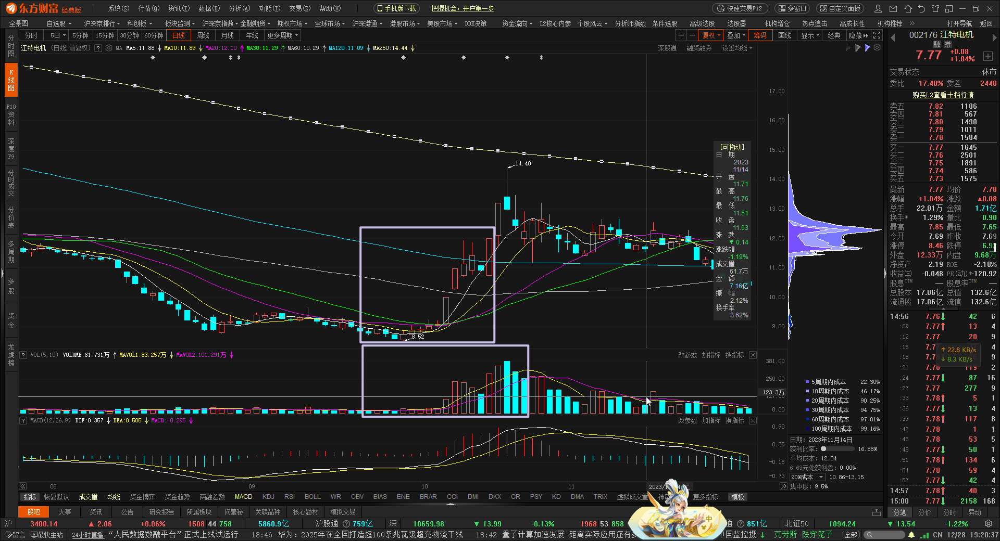
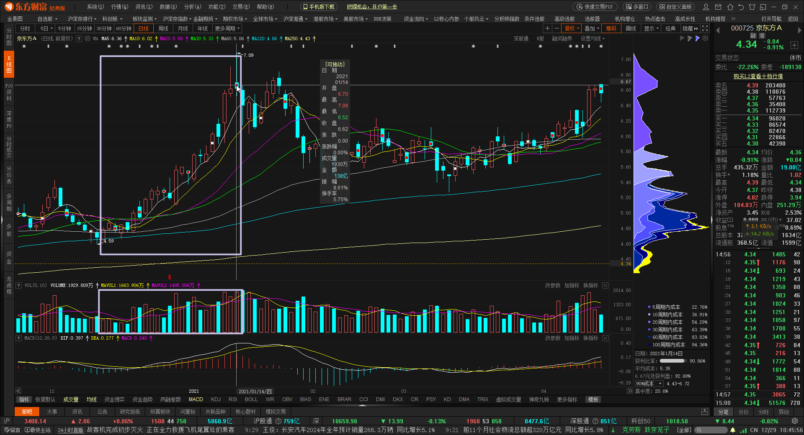
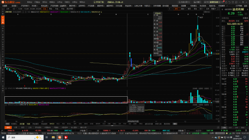

股票之换手率
▶
换手率定义
换手率:是指影视还能内市场中股票转手买卖的频率。在技术分析中，换手率指标是反映市场交投活跃程度 & 反映股票流通性强烈的最重要技术指标之一换手率
换手率因样本总体的性质不同，则有不同的指标类型；例如:交易所所有上市股票的总换手率、基于菜单个股发行数量的转换率、基于某机构持有组合的换手率
理解换手率
一般情况下大多数股票每日换手率在 1% ~ 2.5%
（不包括初上市的股票）70%的股票换手率基本在 3%之内
当一支股票换手率在 3% ~ 7%之间时，代表该股进入相对活跃的状态
（3%成为一种分界线）当一支股票换手率在 7% ~ 10%之间时，代表该股为强势股 &
股价正处于高度活跃当中当一支股票换手率在 10% ~ 15%之间时，大庄密切操作
当一支股票换手率在 15% & 持续多日的情况下，此股也许会变最大黑马
换手率代表了那些内容？
换手率越高，意味着该支股票的
交投越活越投资者购买欲望很强烈换手率高一般意味着股票
流通性好换手率较高的股票，往往也是短线资金追逐的对象，股价起伏很大将换手率与股价走势相结合，可以对
未来的股价做出一定的预测和判断e.g. : 某只股票的换手率突然上升，成交量放大，可能意味着有投资者在大量买进，股价会随着上扬底部放量的股票，其换手率高，
表明新资金介入的迹象较为明显越是底部换手充分，上行中的抛压越轻
换手率与股价高位有什么关系？
- 高位高换手
"高换手洗盘"的方式常被庄家采用。在连续几日长阳上涨后，再度高开快递高走，甚至急冲涨停，但支持不久后被打开，全天一路低走，换手陡然放大。换手率不局限于10%以上,6% ~ 8%皆有可能 - 高位低换手
此种情况大多数是股价涨幅较大，但平均换手率低，形成量价背离，明显不足以维持高位的股价，但股价却并不下跌 / 跌幅较小，而保持一种高位横向缩量整理形态。这通常是高控盘股的特征，表明庄家短期内
并不急于出局
换手率的应用
- 低位高换手率
较高换手率能够维持几个交易日，则一般可以看做是新增资金介入较为明显的一种迹象，此时高换手的可信度较大

- 高位高换手率
较高换手率能够维持几个交易日，则一般可以看做是新增资金介入较为明显的一种迹象，此时高换手的可信度较大。
个股在相对高位突然出现高换手率而成交 量突然放大，一般成为下跌前兆的可能性较大。这种情况多半随着大利好出台，顺利发筹码，＂利好出尽是利空＂

- 长时间低换手率
长时间低换手率的个股往往是限于长期低迷行情中，此时投资者不宜进入，下跌趋势还未结束

股票之换手率
https://www.gongyibai.site/换手率/